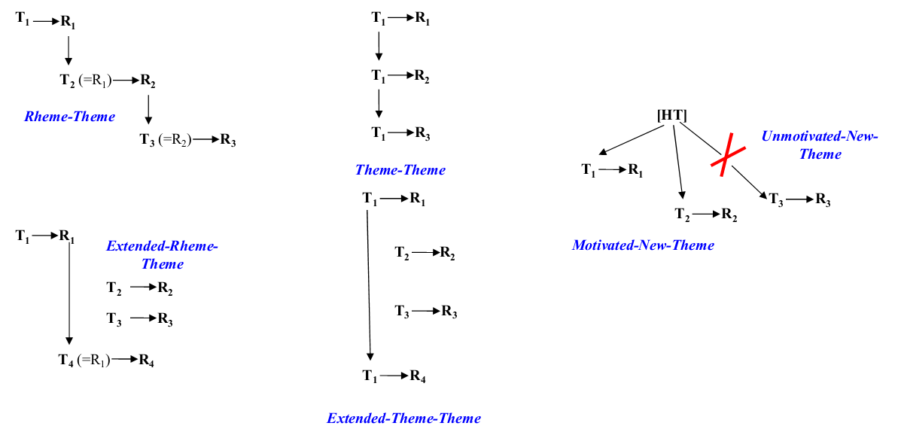

Chương 16 Tiếng Anh viết
16.1 Kết cấu của câu
- Kết cấu các đơn vị ngữ pháp:
Từ >> Ngữ >> Mệnh đề >> Câu
Lưu ý: Viết câu tốt không đảm bảo viết đoạn văn mạch lạc dễ hiểu, đặc biệt với người châu Á. Thành thạo ngữ pháp và xây dựng câu còn phải hiểu nguyên tắc phát triển đoạn theo lối tuyến tính (linearity) để xây dựng đoạn văn tốt
Một câu là một kết cấu hoàn chỉnh, bao gồm có 2 yếu tố:
- Chủ ngữ: Đòi hỏi nói lên đối tượng trong câu
- Vị ngữ: Nói lên hành động của đối tượng
Đảm nhận vị trí chủ ngữ có thể có các thành phần sau:
- Danh từ: New York, USA
- Đại từ: he, she, it
Ngữ (phrase) bao gồm từ 2 từ trở lên, có thể có động từ hoặc danh từ nhưng không thể có đủ kết cấu chủ - vị (nếu đủ kết cấu chủ vị sẽ trở thành mệnh đề - clause)
- Ngữ động từ nguyên thể: To decide is to take risk
- Ngữ động danh từ (gerund phrase) Planing a trip takes a lot of time
- Ngữ giới từ (prepositional phrase – cụm giới + danh) Before breakfast is a great time to walk
Mệnh đề (clause) What makes me really interested in is the way he convinced us
Vị ngữ bao gồm các thành phần về mặt ngữ pháp như sau:
- Động từ chính
- Tân ngữ trực tiếp/ tân ngữ gián tiếp
- Bổ tân
- Trạng ngữ (hay phó từ - adv)
16.1.1 Câu ghép (Compound sentence)
- Câu ghép có thể đứng độc lập với nhau và liên kết với nhau bằng liên từ, gồm 7 từ:
and, or, so, but, for, nor, yet
She loves him very much, but she loves herself even more
Dấu hiệu nhận biết câu ghép là có thể tách thành 2 câu riêng biệt mà không ảnh hưởng đến ý nghĩa của cả đoạn
Các liên từ thường đứng sau dấu phẩy, tuy nhiên, nếu động từ giữa 2 câu là một (thường dùng với to be) thì sẽ không có dấu phẩy
Orange and apple are fruits
- Trong câu ghép, số lượng liên từ tối đa nên sử dụng là 3-4, không nên lạm dụng quá
At the age of 23, Frank Church learned of his incurable cancer, but he lived another 30 years, and in that time he became of the century’s most powerful and effective US senators
16.1.2 Câu phức (Complex sentence)
- Câu phức bao gồm 2 mệnh đề
- Mệnh đề chính: Thể hiện đầy đủ ý nghĩa ngay cả khi đứng 1 mình
- Mệnh đề phụ thuộc: Không hiển thị đủ ý nghĩa nếu đứng 1 mình, có tác dụng bổ sung ý nghĩa cho mệnh đề chính.
Because she is very intelligent, she is always in the top students of her class
16.1.3 Câu có thành phần chêm xen (Embedded sentence)
- Loại câu này sử dụng các đại từ liên hệ: that, which, whose; có tác dụng làm tô điểm thêm ý tứ trong câu
Abraham is a great writer. She was born in Missisipi
Abraham who was born in Missisipi is a great writer
- Đối với loại câu sử dụng đại từ liên hệ có tác dụng làm chủ ngữ như
who, which, có hai loại biến thể. Xem ví dụ sau
Flashligh fish blink their lights to attract their prey. They are equipped with glowing pockets of bacteria beneath each eye.
Biến đổi thành câu phức:
Flashligh fish, which are equipped with glowing pockets of bacteria beneath each eye, blink their lights to attract their prey
- Biến đổi thành câu đệm chen tỉnh lược theo 2 cách:
- Bỏ đại từ liên hệ và trợ động từ - giữ nguyên vị trí
- Bỏ đại từ liện hệ & trợ động từ, đổi lên đầu câu
Flashlight fish, equipped with glowing pockets of bacteria beneath each eye, blink their lights to attract their prey
Equipped with glowing pockets of bacteria beneath each eye, flashlight fish blink their lights to attract their prey
Lưu ý: Loại câu tỉnh lược này dùng đặc biệt nhiều với động từ to be
A tsunami, capable of catastrophic destruction, is generated in a body of water
16.1.4 Câu phức hợp
- Vừa mang tính chất câu ghép, vừa mang tính chất câu phức. Thực ra, đây là loại câu kết hợp giữa câu ghép và câu phức
Because he has done so many romatic things for her, she totally believes in his love for her, but the truth is that he considers all things he has done for her as responsibility, and no more
16.1.5 Một số lưu ý về dấu
- Dấu phẩy:
- Dùng trong vị trí địa lý: Bắt buộc phải thêm dấu phẩy sau tên tiểu bang.
New York, Alabama, is a very beautiful city
- Ngày tháng: Phải có dấu phẩy sau năm
23th November, 1954, is the birthday of one of the greatest scientists that the world has ever known
- Dấu chấm phẩy: Sử dụng khi không muốn dùng liên từ, thông tin trong các câu là cân bằng
Men need 25 grams of protein perday; women need 20
The first president who did not go to college was George Washington; the last was Harry Truman
16.1.6 Một số lỗi thường gặp trong câu
16.1.6.1 Đoạn câu lửng lơ (Dangling Modifiers)
Employed as a weekend weatherman on TV, hailstones as big as canned hams were once predicted by David Letterman
Lỗi: Trạng khung cảnh P2 (còn được gọi là ngữ dẫn nhập) và chủ ngữ trong câu không phù hợp với nhau (David Letterman vs. hailstones)
Sửa: Đổi chủ ngữ cho mệnh đề sau
Employed as a weekend weatherman on TV, David Lettẻman once predicted hailstones as big as canned hams
16.1.6.2 Lệch cấu trúc song hành (Faulty Parralelism)
In order to be classified as great, a baseball player must hit with power, a high lifetime batting average is necessary, to filed well, be a fast runner, and throwing with strength and precision
Lỗi: Các ý sau “MUST” không đồng nhất về mặt hình thức
Sửa:
In order to be classified as great, a baseball player must hit with power, achieve a high lifetime batting average, field well, fun fast and throw with strength and precision
16.2 Phát triển câu theo linear
Với người ngước ngoài, kể cả khi đã thành thạo ngữ pháp và từ vựng, vẫn viết tiếng Anh gây khó hiểu cho người bản địa. Nguyên nhân là do cách tư duy của người nước ngoài khác cách tư duy của người Anh, Mỹ.
Người Anh vieetss; “I see him” nhưng người Eskimo thì lại dùng “He appears to me”. Do đó, với người nước ngoài khi viết tiếng Anh, phải hiểu cách thức phát triển và tư duy của người Anh thì mới có thể viết thành thạo được.
Tư duy người Anh Mỹ phụ thuộc vào sự phát triển của văn hóa La Mã, Hy Lạp. Cách thức phát triển của đoạn có hai cách:
- Quy nạp: Viết nhiều ý bổ trợ, câu chốt cuối đoạn
- Diễn dịch: Câu topic ở đầu đoạn, các câu sau bổ trợ
Người Ả-rập khi viết tiếng Anh sẽ dùng liên từ kết nối rất nhiều câu và đưa ra các topics chạy song song với nhau. Các topics này có thể không nhất thiết có liên quan chặt chẽ với nhau. Cho khi đó, người câu Á đưa ra ra vấn đề và đi lòng vòng từ ngoài vào trong. Thêm vào đó, trong văn hóa Anh Mỹ, người nói là người có trách nhiệm trình bày vấn đề mạch lạc và logic để người nghe hiểu. Trong khi đó, văn hóa Trung Quốc, Á Châu lại yêu cầu người nghe phải hiểu ý của người nói. Các nội dung trình bày trong văn hóa Trung Quốc mang ý gợi nhiều hơn.
Để phát triển tiếng Anh viết, cần học cách tư duy viết tiếng Anh theo lối “linearity”
16.2.1 Kỹ thuật phát triển ý theo linear
- Chia đoạn thành từng câu ngắn
- Loại bỏ toàn bộ các liên từ
- Sắp xếp ý theo linear
- Bỏ các ý bị lặp
- Loại bỏ các ý không rõ ràng hoặc thể hiện rõ ràng, tránh để người đọc phải tự hiểu theo cách của mình (implicit)
- Sắp xếp lại câu thành đoạn
Lỗi thường gặp: Lặp lại cùng ý dùng các từ khác nhau
16.2.2 Ví dụ 1
Many kids have to attend classes outside school, even in the weekend (1) They do not have time to do things they like such as: playing with friends, visiting their grandparents, going fishing, or sharing time with their parents, etc. (2) The lessons from schools are enough for children to learn (3) They also have to do a lot of homework. (4)
Các lỗi trong đoạn văn trên:
homeworkliệu có phải làschool homeworkhay làschool homeworkvàextra class homework- Phát triển ý đi lòng vòng:
- Ý 3,4 có thể ghép lại với nhau
- Phát triển theo hướng diễn dịch hơn là quy nạp với lưu đồ
(3,4) >> (2) >> (1)
Sửa lại:
The kids’ school load is already more than enough. Moreover, they still have to take extra classes. Therefore, they do not have time to do things they want
16.2.3 Ví dụ 2
Corporate social responsibilities (CSR) might help organization improve financial performance by establishing a good relationship with prospective investors, so it would have better access to capital. It is because many investors factor CSR into their investment decisions
Khi phát triển linear, ta có thể bỏ tất cả các liên từ và đánh số các câu theo thứ tự
Corporate social responsibilities (CSR) might help organization improve financial performance (1)
byestablishing a good relationship with prospective investors (2),soit would have better access to capital (3).It is becausemany investors factor CSR into their investment decisions(4)
Sửa lỗi linearity
Many prospective investors factor CSR into their investment decisions (4) → CSR help establishing a good relationship with many of them [link 2 to 4] (2) → translate into better access to capital (3) → CSR might help an organization improve financial performance (1)
As many prospective investors factor Corporate Social Responsibility into their investment decissions, CSR helps establishing a good relationship with many of them. Therefore, CSR might translate into better access to capital and help an organization improve financial performance.
16.2.4 Ví dụ 3
My parents, based on our family tradition of majoring in economics, which was thought to be helpful for me in case I need any family support, advised me to choose economics. They also understood that I prefer social science subjects to natural science ones so economics would be the best choice for me
My parents, based on (1)
our family tradition of majoring in economics (2)
which was thought to be helpful for me in case I need any family support (3)
advised me to choose economics (4)
They also understood that (5)
I prefer social science subjects to natural science ones (6)
so economics would be the best choice for me (7)
Các lỗi:
- Lặp ý: (4) = (7), (1) = (5)
- Đi lòng vòng
My parents, based on/understood that (1+5) our family tradition of majoring in economics (2) which was thought to be helpful for me in case I need any family support (3) advised me to choose economics as my best choice (4+7) I prefer social science subjects to natural science ones (6)
As my family tradition majors in economics which was thought to be helpful for me in case I need any family support, my parent advised me to choose economics. Furthermore, I prefer social sciences subjects to natural science ones.
16.2.5 Ví dụ 4
My colleague, instead of attending a hot university as many of his peers did, he followed in his father’s footsteps and chose a less fancy school to become a teacher. This is understandable since living with his father helps him to see his father’s standards of morality and the values of teaching. Consequently, becoming a good teacher like his father is always his life-long dream.
My colleague,
instead ofattending a hot university as many of his peers did (1), he followed in his father’s footsteps (2)andchose a less fancy school to become a teacher (3).This is understandable sinceliving with his father (4) helps him to see hisfather’s standards of morality and the values of teaching (5).Consequently, becoming a good teacher like his father (6) is always his life-long dream (7).
Lỗi:
- lặp (6)
- Có thể ghép các ý có liên quan thành câu phức hợp
Being brought up by his father, who is a teacher (*+6+4) → my colleague grew to appreciate the values of teaching (5) → his dream career is teaching to follow in his father’s footsteps (7+2&6) → hence, instead of targeting some fancier schools, he chose one that allows him to do so (1+3).
16.2.6 Ví dụ 5
I am from Vietnam, so after reading your article, with national pride, I should raise voice against your complaints about my country
I (1) am from Vietnam (2),
soafter reading your article (3), with national pride (4), I (5) should raise voice against your complaints about my country (6)
I (1+5) → am from Vietnam (2) → with national pride (4) → reading your article (3) → should raise voice against your complaints about my country (6)
As someone from Vietnam who is proud of her country, I, after reading your article, should raise voice against your complaints about my country.
16.2.7 Ví dụ 6
With the experience associating with the inspiration by successful businesses who overcame their finance problems that I watched on a TV show named “Being rich is not tough”, my passion for business was further fueled.
With the experience associating with (1) the inspiration by (2) successful businesses who overcame their finance problems (3) that I watched on (4) a TV show (5) named “Being rich is not tough” (6), my passion for business was further fueled (7).
Lỗi:
- = (4)
- = (7)
Linearity có thể phát triển như sau.
- There were successful business who overcame their financial problems (3)
- They were featured on TV showed named “Being rich is not tough” (5 + 6)
- I watched the TV show (1 + 4)
- My passion for business was further fueled (7)
“Being rich is not tough” is a TV show which featured businesses who overcame their financial problems. After watching that show, my passion for business was further fueled.
After watching a TV show named “Being rich is not tough” which featured businesses who overcame their financial problems, my passion for business was further fueled.
After watching “Being rich is not tough”, a TV show featuring businesses who overcame their financial problems, my passion for business was further fueled.
16.2.8 Ví dụ 7
When I was a child, my mother was so busy at work that she could only served my family with meals of one or two dishes. The lack of food diversity in my family’s meals was, besides the lack of preparation time, also due to the fact that the only kind of food that was always available in every house at that time without refrigerators was dried fish. Other kinds of food needed to be purchased on every single day.
When I was a child,(1) my mother was so busy at work (2) that she could only served my family with meals of one or two dishes (3). The lack of food diversity in my family’s meals (4) was,
besidesthe lack of preparation time (5),also due to the fact thatthe only kind of food that was always available in every house at that time without refrigerators was dried fish (6). Other kinds of food needed to be purchased on every single day (7).
Lỗi:
- = (4)
- = (5)
- Thiếu các ý bổ trợ liên kết và sắp xếp theo linearity
Cấu trúc trên có thể sắp xếp như sau:
When I was a child → We did not have refrigerator → the only available non-perishable food was dried fish (6) → other types of food must be purchased daily (7) → unfortunately my mother was so busy at work (2) → no time for grocery shopping (*) → and also for cooking (5) → only served my family the same simple meals of one or two dishes (3+4)
When I was a child, our family did not have refrigerator. The only available non-perishable food was dried fish, and other types of food must be purchased daily. Unfortunately, my mother was so busy at work that she had no time for grocery shopping & for cooking. Therefore, she could served our family the same simple meals of one or two dishes.
16.2.9 Ví dụ 8 - implicit linking
Grade could motivate students to work hard to achieve academic excellence by turning in thoroughly researched and well-written papers.
Câu trên khó hiểu về ý và có thể diễn đạt thêm nhiều ý khác nhau. Câu trên có thể đổi thành như sau
Grade could motivate students (1) → (in hope for a better grade) (new idea) → they work hard (2) → making effort to turn in thoroughly researched and well-written papers (4) → and by extension (*) [link 4 to 3], achieve academic excellence (3).
Grade could motivate students. In hope for a better grade, students will work hard to turn in thoroughly researched and wel written papers, thereby achieve academic excellence
16.2.10 Ví dụ 9 - dịch vọng cổ
Hò ơ… chiếu Cà Mau nhuộm màu tươi thắm
Công tôi cực lắm mưa nắng dãi dầu
Chiếu này tôi chẳng bán đâu
Tìm cô không gặp, ờ… tôi gối đầu mỗi đêm
Cách xây linearity:
- Chiếu Cà Ma tươi thắm → Ai làm ra chiếu
- Công tôi cực khổ → bỏ công ra làm cái gì? Tôi là ai?
- Chiếu này không bán → vậy thì để làm gì?
- Tìm cô không gặp → nhân vật “cô” là ai, đóng vai trò gì trong câu chuyện này?
- Gối đầu mỗi đêm → gối đầu cái gì? Tại sao lại làm thế?
Tôi là người bán chiếu → tôi yêu một cô gái → tôi đã bỏ rất nhiều công sức → làm ra một cái chiếu rất đẹp → để làm quà tặng cho người con gái ấy → tôi không bán → nếu không có dịp gặp lại cô → tôi sẽ dùng chiếu này gối đầu hằng đêm → để nhớ về cô ấy.
I have been working day and knight, come rain or sunshine…
to make such a nice mattress, colorful and bright
It is not for sale, but for you, the girl in my dream, as a gift
I we dont have another chance to meet,
this would serve as a pillow
lulling me soft asleep
Phương án trên vẫn có yếu tố linking ambiguity
16.2.11 Ví dụ 10
Brinkley has made biased claims about Vietnam based on his personal experiences (1). Many foreign visitors mentioned that they are impressed with a wide variety of animals here, especially in the countryside (2). Their experiences obviously contradict that of Brinkley (3), who found few dogs, cats, and birds during his time in Vietnam (4).
However, this does not necessarily mean that (5) Vietnam is lacking in these animals (6). It could simply be that Brinkley was not lucky as far as animal sighting is concerned (7). In fact, Vietnam boasts one of the largest varieties of animals in the South-East Asia, according to Asian Animal Protection Association’s official data published last year (8)
Idea subgroups
– The author’s main claim (including Brinkley’s original claims & the author’s counter’s claim) - Brinkley made biased claims about Vietnam (1) - Brinkley found few animals during his trip (4) - this does not necessarily true (5) - Vietnam is lacking in animals (6) – Supporting evidence - other foreign tourists’ comments (2) - it is contradicted by others’ experience (3) - Animal Protection Association’s data (8) – Alternative explanation(s) - Brinkley was not lucky regarding animal sighting (7)
Brinkley made biased claims about Vietnam (1) → one of his claims is that (*) → he found few animals during his trip (4) → leading to his conclusion that (*)* → Vietnam is lacking in animals (6) → this does not necessarily true (5) → as it is contradicted by other evidence (*+3) → a. Animal Protection Association’s data (8) → b. other foreign tourists’ comments (2) → An alternative explanation for Brinkley’s claim is that (*) → he was not lucky regarding animal sighting (7)
16.3 Theme - rheme
16.3.1 Giới thiệu
Theme: Là bất cứ thành phần nào xuất hiện ở đầu câu
Rheme: Các thành phần khác làm rõ cho theme
Theme can be considered as “the point of departure of the message” (Halliday, 2004, p. 64) and English speakers signal the thematic status of a lexical item by putting it first.
- She slowly turns towards him, gun in hand. – Slowly, she turns towards him, gun in hand. – Gun in hand, she slowly turns towards him. – Towards him slowly she turns, gun in hand
Ví dụ:
They find our case inconclusive. Inevitably, as a result, it will need reviewing
Trong câu số 2 trên có 3 theme:
- It: Topical - chủ đề trong câu
- Inevitably: Interpersonal
- As a result: Textual
Lưu ý về theme:
- 1 câu luôn chứa
topical theme - 1 câu có thể chứa nhiều theme
Các ví dụ khác về theme
- Friday the 13th sadly marked a most unfortunate time for one of America’s leading news broadcasters.
- Tim Russert, a political activist who made a TV career of his passion with interviewing the powerful and influential, died of a heart attack Friday.
- Unsurprisingly, as many have expected, his TV network announced that they would let someone host a special edition dedicated to Russert on Sunday.
- Russert, born in 1950, was a beloved native of Buffalo, where the news of his death has hit hardest.
- At Tim Russert Children’s Garden, a pretty place in his south Buffalo neighborhood Friday, a bouquet of red flowers appeared soon after news of his death emerged.
- Earlier, when Russert came home to sign his book, people lined up by the hundreds to have their copies signed and wish the Russerts well.
Lưu ý: Việc điều chỉnh theme & rheme chính là việc điều chỉnh trung tâm thông báo.
16.3.2 Thematic Progression (TP)
TP có các cách phát triển sau:
Phân loại theo cách thức chuyển tiếp (theo thứ tự ưu tiên khi sử dụng):
Rheme-Theme: Câu trước là
rheme, câu sau làthemeTheme-Theme: Câu trước là
theme, câu sau cũng làthemeExtended-Rheme-Theme: Chèn 1 câu mới trước khi chuyển trong
RTExtended-Theme-Theme: Chèn 1 câu mới trước khi chuyển trong
TTMotivated-New-Theme: Giới thiệu 1 câu mới
Unmotivated-New-Theme: Giới thiệu 2 câu mới (không nên dùng)
Phân loại theo cách thức lặp:
- Lexical: Lặp theo từ
- Referential: Lặp đối tượng để tham khảo
- Textual
Rheme-Theme
The vast majority of these activities required little or no literacy skills. In some senses, literacy skills were arguably less important in the agricultural age than they are now.
Extended-Rheme-Theme
The vast majority of these activities required little or no literacy skills. There are many exceptions, though. In some senses, literacy skills were arguably less important in the agricultural age than they are now.
Theme-Theme
Small children don’t take learning a language as hard work but as something to discover. They can avoid the negative influence of their mother tongue.
Extended-Theme-Theme
Small children don’t take learning a language as hard work but as something to discover. This activity may even be one of their favorites. They can avoid the negative influence of their mother tongue.
Motivated-New-Theme
Almost all talents of art were discovered when they attend artistic hours at school. As people always say if you do not give it a try, you will not never know how it is.
Unmotivated-New-Theme
Almost all talents of art were discovered when they attend artistic hours at school. Thieu Nang students all look beautiful and smart.

Ví dụ về theme-rheme theo cách lặp lại ý:
Lexical repitition
The vast majority of these activities required little or no literacy skills. In some senses, literacy skills were arguably less important in the agricultural age than they are now.
Small children don’t take learning a language as hard work but as something to discover. Small children can avoid the negative influence of their mother tongue.
Referential repetition
The vast majority of these activities required little or no literacy skills. In some senses, these abilities were arguably less important in the agricultural age than they are now.
Small children don’t take learning a language as hard work but as something todiscover. They can avoid the negative influence of their mother tongue.
Textual repetition: Chỉ áp dụng cho RT
Small children don’t take learning a language as hard work but as something to discover. As an example, my nephew enjoys his Russian lessons very much
16.4 Manner of exemplification
If a student studies hard for good grades and succeeds in his classes, he won’t need excuses to explain why his grades are low. It is better not to start drinking than become an alcoholic and let the drink ruin one’s life, cause damage to one’s health, and then to go through the pain of changing the way of life and being forced to stay away from drink. Therefore, a person who has good habits will never say that his luck is bad. A frugal man can prosper because he knows how to invest well and accumulate greater wealth. Of course, the person who saves his money and does not spend extravagantly will never say that his luck is bad.
Example: Cần nói về ví dụ cụ thể về 1 người nào đó ta biết (nếu không biết thì tự chế ra)
Rationales: Không nói về ví dụ cụ thể mà đưa ra các lập luận dựa trên logic cần thiết.
For example, if parents lead a healthy life in harmony, the youngsters will definitely learn good things. By contrast, if parents smoke, drink, and behave badly, they will absolutely afect their children negatively.
16.5 Kỹ thuật phát triển TP
16.5.1 Sắp xếp lại Theme-Rheme
Khi viết câu, cần sắp xếp lại theme-rheme và cần tránh các lỗi của người Việt:
- Đổi qua đổi lại giữa các theme và rheme
- Đưa các cụm không cần thiết
Con người phải làm việc để nuôi sống bản thân và góp phần xây dựng cuộc sống chung của cả cộng đồng. Khác với các sinh vật khác sống dựa vào thức ăn có sẵn kiếm được trong thiên nhiên, con người phải lao động sáng tạo, làm ra mọi của cải phục vụ đời sống.
Câu trên rất thuần tiếng Việt. Tuy nhiên, nếu dịch y hệt như trên sang tiếng Anh sẽ gặp vấn đề sau.
- Kết cấu
theme-themebị vị phạm do bị chèn 1 mệnh đề ở giữa.
Sửa lỗi:
Để nuôi sống bản thân và góp phần xây dựng cuộc sống chung của cả cộng đồng con người phải làm việc. Họ, khác với các sinh vật khác sống dựa vào thức ăn có sẵn kiếm được trong thiên nhiên, phải lao động sáng tạo, làm ra của cải phục vụ đời sống
Instead of investing the money or using it wisely, he brought a new luxury car. The insurance for the car was very expensive
Instead of investing the money or using it wisely, he brought a new luxury car, which cost a lot of insurance
Ví dụ
For language learners, knowing a word means knowing its underlying forms and derivations as well as different meanings and usage, as suggested by Ronal Carter and Michael McCarthy (1993) [S1]. Knowing a word also means, they add, knowing the frequency of encountering it [S2]. It is not easy for language learners to acquire a foreign vocabulary [S3]. Regarding a good method for acquiring vocabulary, Knight (1994) found that learners would substantially benefit from using dictionaries [S4]. Language learners should carry dictionaries, not grammar books around (Evelyn Hatch and Cheryl Brown, 1989) [S5]. As I. S. P. Nation has put it, the use of word cards provides a golden opportunity for learners to obtain foreign vocabulary [S6]. How can learners become successful in learning vocabulary [S7]? My paper will discuss two most common methods for improving one’s English vocabulary [S8].
Các lỗi: Vi phạm kết cấu tuyến tính và Theme-Rheme
- Câu 1 & 2: Kết cấu Rheme-Theme bị vi phạm. Nhìn qua thì nghĩ là cấu trúc TT, nhưng do có they add, bản chất là RT. Cần phải sửa lại.
- Câu 2 & 3: Thiếu liên kết. Tại sao việc knowing the frequencey of encoutering it lại khiến not easy for language learners to aquire…. Cần thêm textual theme để nêu lý do
- Câu 3 & 4: Hoàn toàn thiếu sự liên kết, đưa 1 cụm không liên kết Regarding a good method for acquiring vocabulary vào trong câu dẫn.
- Câu 4 & 5: Lặp từ language learners, đổi sang đại từ để giữ kết cầu RT
- Câu 5 & 6: Thiếu liên kết giữa word cards và dictionary. Cần thêm textual theme
- Câu 6, 7, 8: Thiếu sự liên kết giữa 2 phương pháp học từ vựng với nội dung của paper. Cầ viết lại để đảm bảo kết cấu RT là linear.
For language learners, knowing a word means knowing its underlying forms and derivations as well as different meanings and usage, as suggested by Ronal Carter and Michael McCarthy (1993) [S1]. They further argue that knowing a word also means,
they add, knowing the frequency of encountering it [S2]. Since this is a multi-faceted process, itismay not be easy for language learners toacquire a foreign vocabularyimprove their lexical knowledge [S3]. This brings up the central question: How can learners become successful in learning vocabulary [S7]? A possible solution to such challenges has been proposed byRegarding a good method for acquiring vocabularyKnight (1994), who found that language learners would substantially benefit from using dictionaries [S4]. [Better still]Language learnersthey should also carry dictionaries, not grammar books around (Evelyn Hatch and Cheryl Brown, 1989) [S5]. In addition to dictionaries,I. S.P. Nation has put it,the use of word cards, as I.S.P. Nation has put it, providesaanother golden opportunity for learners to obtainforeign vocabularylexical items in second language [S6]. Thesemy paper will discusstwomostcommon methods for improving learners’’one’s EnglishL2 vocabulary will be discussed in my paper [S8], with English as the language of investigation.
16.5.2 Marked theme usage
Định nghĩa: Câu được gọi là có kết cấu nhấn (marked) nếu theme trong câu không phải là chủ ngữ.
Ví dụ:
- Unmarked:
- I have a bottle of water
- What I want now is just a cup of coffee
- Marked:
- On Saturday night I lost my wallet
- Step by step I finished my personal goal of reading 50 books this year
Người Việt dùng marked theme nhiều hơn người Anh bản ngữ rất nhiều trong văn nói do tiếng Việt hay có xu hướng đảo trạng lên trên. Khi chuyển ngữ từ tiếng Việt sang tiếng Anh, cần lưu ý để đảm bảo tính tuyến tính và thematic continuity trong đoạn.
Learning a second language will easily make young children neglect their mother tongue languages. In Vietnam many young children are taught English alphabet whereas their Vietnamese vocabulary is even not good.
16.5.3 Reference switching
Reference switching là hiện tượng thay đổi chủ ngữ qua lại trong câu.
If children learn a foreign language early (1), they will have more time to learn it better(2). As a child, he does not have to concern about too many things (3). He only learns, plays and eats (4). And it is very good (5) because children can learn to develop both their mother tongue and foreign language (6)
Lỗi:
- Thay đổi qua lại giữa children, child và he, she. Việc này dẫn đến sự khó hiểu và mất kết cấu tuyến tính.
- trùng (3) trùng (4)
- không rõ ý (implicit)
Learning a foreign language early could be good for a child. He, not having to concern about many things, could focus on learning and playing. Through such activities, he can learn to develop both their mother tongue and foreign language.
Spending a majority of their time with friends is one of reasons why friends have most influence on young adults. A young adult use most of his time at school, where he joins his friends in many activities. Through such activities, a child and his peers connect and learn from each other.
A reason why friends have most influence on a young adult is that he spends most of his time in school, where he joins his friends in many activities. Trough such activities, they connect and learn from each other.
Lưu ý: Lỗi swiching reference là ảnh hưởng của tiếng Việt
Để không bị biến thành nạn nhân của thói quen xấu, mỗi người phải có sự rèn luyện, tu dưỡng không ngừng về mặt đạo đức, ý chí. Chúng ta phải nâng cao nhân thức của bản thân và bạn bè về tác hại của thói hư tật xấu. Các bạn cần khuyên bảo nhau biết kiềm chế trước những thú vui không lành mạnh.
Các ví dụ khác
As Galillei brought up heliocentrism again, only a few supported his idea while the majority doubted.
As Galillei brought up heliocentrism again, it was supported by only a few and doubted by the majority
If you visit my university, you can see a lot of birds around the campus, and students often feed them
If you visit my university, you can see a lot of birds around the campus, who are often fed by students.
Theo các chuyên gia lao động, thất nghiệp là tồn tại tất yếu của đời sống xã hội, ngay ở các nước phát triển cũng đang chịu áp lực bởi vấn nạn này.
Các chuyên gia lao động cho rằng → thất nghiệp là tồn tại tất yếu của đời sống xã hội → một vấn nạn mà gây áp lực cho ngay cả các nước phát triển
The difference was not much, but my companions were very surprised since it did not happen anywhere else they had been to in Europe and Asia.
Although the difference was not much, it did surprise my companions who never experienced anything similar anywhere else in Europe and Asia
16.5.4 Rheme-Rheme redundancy
Matt claimed that he was ripped off, overcharged and mistreated constantly during in his short stay in Vietnam. That makes me wonder why could all those things happen continuously to him in such a short time.
Matt claimed that he was ripped off, overcharged and mistreated constantly during in his short stay in Vietnam, which makes me wonder why.
My friend still goes dancing three times a week even though she has a baby, who needs nutritious and well-prepared meals. This case could be hard to find in a married woman with little child like her several decades ago.
My friend still goes dancing three times a week even though she has a baby, who needs nutritious and well-prepared meals. This would be impossible several decades ago
Lưu ý: Người Việt khi viết hay bị lặp ý, sử dụng cùng 1 ý cũ với các cụm và cách thể hiện khác nhau. Lối viết này gọi là lexical Rheme-Rheme
Cấu trúc: (T1 -> R1) + (T2 -> R2 = R1)
Cách sửa:
- Cách 1: T1 -> R1 = T2 (ví dụ 1)
- Cách 2: T1 -> R1. T2 -> \(\phi\) (ví dụ 2)
16.6 Employment of cohesive devices
- Cohesion: Sự kết nối các ý trong đoạn văn
- Coherence: Sự mạch lạc trong đoạn văn
- Cohesive devices: Các từ, liên kết từ tạo sự kết nối trong đoạn
Lưu ý: Đoạn văn tiếng Anh do người Việt viết có vẻ mạch lạc và chặt chẽ với người Việt nhưng chưa chắc đã tạo cảm giác tương tự với người bản xứ.
Các loại từ vựng tạo sự liên kết trong đoạn:
- Reference – Substitution – Ellipsis – Conjunction – Lexical cohesion
16.6.1 Reference
Reference đề cập đến người, sự vật, hiện tượng trong câu thông qua tên hoặc đại từ. Reference có hai loại: endophoric & exophoric
Endophoric: Chỉ đến một vị trí trong câu, có hai loại:
Anaphoric: Đối tượng được đề cập đến đứng trước. The dog ate the bird and it diedCataphoric: Đối tượng được đề cập đến đứng sau. Because his drink was cold, David ordered another a cup of coffee
Exophoric: Đối tượng ẩn, được hiểu trong context của cả đoạn. The Queen has come back to London
16.6.2 Substitution - thay thế
Substitution được dùng khi thay thế một cụm/đoạn khác nhưng không phải dùng với đại từ nhân xưng
“You like to write?” - “I do”
16.6.3 Ellipsis - lược bỏ
Ellipsis: Cách thức lược bỏ thành phần bị lặp trong câu.
He wrote a letter and
hesent it
16.6.4 Conjunction - liên từ
Conjunction: Thể hiện sự liên kết giữa các câu, ý trong đoạn văn
Although they’re expensive, they last forever and never go out of style.
16.6.5 Lexical cohesion - Chặt chẽ trong từ vựng
Lexical cohesion: Tạo sự chặt chẽ thông qua các nhóm từ được dùng trong câu
Cats appear to be affected with allergic bronchitis more frequently than dogs.
Animals are usually affected as young to middle aged adults.
16.6.6 Các vấn đề xử lý với cohesion
16.6.6.1 Ví dụ 1
Grade does matter a lot. Specifically, the competitive spirit, deeply ingrained in students, who compete with each other for high marks, may both drive them to work harder and stress them out at the same time. I remember one girl bursting into tears when she failed to attain her desired grade. Another suffered from stress before every single test even though she was a capable and smart student. However, marks are not an absolute criterion of students’ levels.
Phân tích lỗi: A → …long distance… A’ (=A) → B
Sửa:
No matter how important they are to students, marks, however, should not be used as an absolute criterion for assessing their academic performances.
16.6.6.2 Ví dụ 2
In order to protect himself from being attacked, the black man should be bold, independent and tough. On the other hand, the black woman suffered a lot
Lỗi:
- Thiếu sự liên kết giữa black man và black woman
- Kết cấu câu thiếu tuyến tính
In order to protect himself from being attacked, the black man should be bold & tough. On the other hand, in order to do so for herself, the black woman should be strong & independent. Having failed to do so, she suffered a lot.
16.6.6.3 Ví dụ 3
Mrs. Shortley is very self-confident. On the one hand, she depends on Mrs. McIntyre for a living. On the other, she controls Mrs. McIntyre
Lỗi:
- Tạo kết cấu theme-theme 3 lần trong 3 câu
- Các đại từ thay thế she bị lặp
- Câu (1) là nguyên nhân cho câu (3)
Sửa lỗi: (2), (1) & (3)
Tập trung tạo sự tương phản
On the one hand, Mrs. Shortly depends on Mrs. McIntyre for a living. On the other hand, she, being self-confident, controls Ms. McIntyre
Tập trung vào tính cách của Mrs. Shortley
Mrs. Shortley is very self-confident, who controls Mrs. McIntyre even though she depends on her for a living
16.6.6.4 Ví dụ 4
In big cities, there are many extracurricular clubs for children to join, which help develop their hobbies. On the contrary, such clubs in the countryside are few and far between.
Lỗi: Dùng sai ý on the contrary vs. In contrast
In big cities, there are many extracurricular clubs for children to join, which help develop their hobbies. In contrast, such clubs in the countryside are few and far between.
16.6.6.5 Ví dụ 5
Many of my friends love Dota, a popular computer game and spend hours playing it. I have not enjoyed any game let alone Dota.
Lỗi: Dùng sai let alone trong bối cảnh này
Many of my friends love Dota, a popular computer game and spend hours playing it. I have not enjoyed Dota or any computer games for that matter
16.6.7 Quan hệ của liên từ
Liên từ đóng vai trò rất quan trọng trong câu. Tuy nhiên, vị trí đặt câu trong liên từ còn phụ thuộc rất nhiều vào trung tâm thông báo. Câu làm nội dung trung tâm thông báo sẽ ảnh hưởng đến thứ tự và vị trí của các câu khác. Qua đó, ảnh hưởng đến cách sử dụng liên từ.
- Amplification: Câu quan trọng đứng trước
- Contrast: Câu quan trọng đứng sau.
The old guy was proud yet poor
The old guy was poor yet proud
And vs. OR
Stay home where no one would overcharge you, rip you off and treat you poorly
Lỗi: Ý ở đâu mang tính alternative, không phải combination
Stay home where no one would overcharge you, rip you off or treat you poorly
A: Take it easy OR take it calm?
B: If it’s small, you can take it easy AND calm.
16.6.7.1 Nhóm chỉ nguyên nhân
As/Since: Được dùng khi cả người viết và người đọc đều biết nguyên nhân, HOẶC mệnh đề chứa as/since không phải là trung tâm thông báo
Since the gorilla is so big and powerful, it has no real enermy
Due to, because of, owing to, thanks to: Sử dụng với phrase
She decided to retire early because she was chronically sick
She decided to retire early due to/because of/owing to her chronic health problems.
Given: Mang ý đề cập, mô tả về 1 phần của nguyên nhân
Given the uncertainty over the company’s future, we decided not to buy their stock
Given that: Mô tả về vấn đề, mang ý nghĩa khách quan và đang tồn tại
Given that conflict is inevitable, we need to learn how to manage it
16.6.7.2 Nhóm chỉ mục tiêu
So as to: Formal
In order to: Informal
In Tehran the wives of foreign diplomats wore headscarves so as not to offend the Iranians.
So that: Nối mệnh đề phụ ngay trong câu
People are living longer than ever before, so that even people who are 65 or 70 have a surprising amount of time left.
Therefore: Nối hai câu, trong đó, câu hai là hệ quả của câu 1
People are living longer than ever before. Therefore, even people who are 65 or 70 have a surprising amount of time left.
, therefore: Nối hai câu độc lập. Có thể dùng như and
People are living longer than ever before, (and) therefore, even people who are 65 or 70 have a surprising amount of time left.
16.6.7.3 Nhóm chỉ thứ tự thời gian
Then: Có thể dùng để chỉ thứ tự thời gian, nhấn hoăc quan hệ nhân quả
He took a cup of coffee. Then he started criticizing his teammate
He sounded sincere, but then, he always did
He won’t resign. Then we must force him to leave
Thereupon: Mô tả cùng lúc thứ tự và hậu quả trực tiếp - formal
The comittee reviewed the documents and thereupon decided to accept the proposal
First: first, at first, in the first place
When I first met Marie, I was greatly impressed. At first | First I thought she was perfect for you. I couldn’t be more wrong. Now, come to think of it, you should not date her in the first place
16.6.7.4 Nhóm chỉ thời điểm song song
Meanwhile: Nối hai câu độc lập
While: Nối mênh đề chính và mệnh đề phụ
Why don’t you sit and have a beer. Meanwhile, I ’ll find something to eat
You may clean the boát while I check the oars
16.6.7.5 Nhóm chỉ sự tương phản, trái ngược
Nevertheless, however: However ít mang tính nhấn hơn, dùng để liên kết hai câu
Studies indicate smoking is bad for one’s health. However, people still continue to smoke.
While, whereas: Liên kết mệnh đề chính với mệnh đề phụ
While/Whereas people know that smoking is bad for their health, they continue to smoke
Although, Even though: Tương tự như while nhưng nhấn và sự tương phản nhiều hơn
Although | Even though people know that smoking is bad for their health, they continue to smoke.
Contrast: In contrast, on the contrary
Intead
I turned off the light instead of the fan (by accident)
Rather than: Chỉ sở thích
I chose a cup of tea rather than coffee (by choice)
Except vs. Except that
- Except: ngoại trừ
- Except that: Nhưng vì, dùng để giải thích, đặt sau dấu phẩy
The museum opens the whole week except Monday
Bảo tàng mở cả tuần trừ thứ hai
I want to go, except that I am tired
16.6.7.6 Nhóm chỉ sự bổ trợ, thêm ý
- Also
She has a reputation for brilliance. Also, she is gorgeous.
- Besides
- In addition
- Moreover
- Furthermore
- What is more
- On top of that/this: Dùng mang tính nhấn
We missed the train, and on top of that we had to wait for two hours for the next one
- In fact: Nhấn vào điểm mới so với ý trước
I haven’t seen him for years. In fact, I can’t even remember what he looks like
- Indeed: Thêm ý, làm mạnh hơn mệnh đề phía trước
Hadley is certainly a great data scientist. Indeed, I regard him as one of the most influencing data scientists of our time
- Worse yet, worse still, to make matters worse, what is worse
- Better still
- For example, for instance, to take an example
- Such as
A few simple precautions can be taken, such as ensuring that desks are the right height
16.7 Linking facilitation
16.7.1 Linking scope
Xem ví dụ sau
- ONLY John hit Andy in the eye yesterday
- John ONLY hit Andy in the eye yesterday
- John hit ONLY Andy in the eye yesterday
- John hit Andy ONLY in the eye yesterday
- John hit Andy in ONLY the eye yesterday
- John hit Andy in the ONLY eye yesterday
- John hit Andy in the eye ONLY yesterday
- John hit Andy in the eye yesterday ONLY
Vị trí đặt từ sẽ ảnh hưởng đến ý nghĩa và liên kết của ý trong câu và đổi trung tâm thông báo
The article is full of experiences about how badly people treated him and stole money from him.
Nhấn về mức độ của people treated him và stole money
The article is full of experiences about how people treated him badly and stole money from him.
Nhấn về mức độ của how people treated him
Ví dụ:
A young adult often thinks that (A) his parents are from a different generation (B), so supposed that his parents may not be able to understand his feeling (C).
- Ý người viết: A + C -> B
- Ý người đọc có thể hiểu: A + B -> C
A young adult often thinks that his parents may not be able to understand his feeling since they are from different generation
Older family members may experience the same problem in the past (A), and they may succeed or fail (B). Therefore, they probably are in a better position to give advices to younger ones (C).
- Ý người viết: A + C/B
- Ý người đọc có thể hiểu: A + B -> C
Since older family members may experience the same problem in the past, they probably are in a better position to give advices to younger ones regardless of whether they succeeded or failed in solving those
A woman, without her man, is nothing
A woman, without her, man is nothing
16.7.2 Linking distance
Các từ và ý có liên kết với nhau phải được đặt gần nhau. Tiếng Việt khi viết lại có xu hướng đặt cách xa nhau và chuyển trạng lên trên (mark theme). Do đó, khi dịch và viết tiếng Anh cần lưu ý
So với bạn bè cùng trang lứa, Tôi cho rằng ảnh hưởng của bố mẹ với con cái trong nhà rõ nét và có nhiều điểm khác biệt hơn
In my opinion, parents often influence young adults more and in a different way from their friends.
In my opinion, parents, in comparison to friends, often influence young adults more and in a different way
I had to learn many subjects, which I initially thought have little relevance to my major such as higher mathematics, quantum physics and inorganic chemistry.
I had to learn many subjects, such as higher mathematics, quantum physics and inorganic chemistry, which I initially thought have little relevance to my major
The first group of people believes that working with machines has a lot of advantages.
Lỗi: first group cần được viết lại để giữ ý liền mạch
People who prefer working with machines belive that doing so has a lot of advantages
She has been advised to read up on behavioral economics, some optional reading materials considered very helpful in analyzing investment decisions by her professor
She has been advised by her professor to read up on behavioral economics, some optional reading materials considered very helpful in analyzing investment decisions.
A few years ago, I wanted to run a project on helping homeless children. I told my parents about it in the very first stage, when I even did not have a clear idea of how to do, in hope of getting their suggestions.
A few years ago, I wanted to run a project on helping homeless children but did not know how to do it. Therefore, I turned to my parents for encouragement and help.
16.7.3 Implicit vs. Explicit
The rice crops failed. The cotton did quite well.
The rice crops failed. However, the cotton did well
Implicit là hiện tượng mà tác giả không trình bảy rõ nghĩa mà độc giả phải tự tìm cách hiểu và làm rõ nội dung. Có 3 nguyên nhân dẫn đến hiện tượng này
- Người viết không đưa được
full context - Người viết cho rằng người đọc có full-background để hiểu được ý implicit. Lỗi này rất phổ biến khi người viết đưa tên các địa danh trong nước vào bài viết và cho rằng người đọc cũng hiểu được
- Người viết kỳ vọng người đọc có thể hiểu được ý ẩn
Người Việt do ảnh hưởng bởi văn hóa, thường nói ngụ ý, điều này khiến cho khi viết tiếng Anh sẽ gây khó hiểu với người bản địa.
Lỗi loại 1
When my father retired, he fills his free time with surfing Internet every day without even going outside. However, when a new restaurant is built nearby, he often got invited to different parties held there by his neighbors. As a result, he makes many new friends and does not feel tired any more.
Không đề cập đến vấn đề dad was tired
Lỗi loại 2
Gần hơn có Bác Hồ kính yêu – một tấm gương vượt khó trong học tập. Thời trai trẻ, anh thanh niên yêu nước Nguyễn Tất Thành đã xác định cho mình một quan niệm sống đúng đắn: phải đi nhiều nơi, phải học nhiều điều hay, điều mới để giúp ích cho đất nước và dân tộc. Từ một anh Ba phụ bếp trên chiếc tàu buôn, người thợ ảnh ở ngõ nhỏ Pônggoăng đến người thợ quét tuyết trong công viên ở Luân Đôn…
When I watched Thai noodle advertisement in VTV3, the image of Thai women’s traditional dress stuck in my memory.
When I saw a Thai noodle advertisement on VTV3, a very popular TV channel in Vietnam | the most watched TV channel in Vietnam, the image of Thai women’s traditional dress stuck in my memory.
The company allegedly discharged waste water to the Thi Vai River in Dong Nai.
The company allegedly discharged waste water to the Thi Vai River in Dong Nai Province of South Vietnam
Hanoi has 111 lakes and 1165 ha of water surface areas.
Hanoi has 111 lakes and 1165 ha (equivalent to 2867 acres) of water surface areas.
Lỗi loại 3
I have a boyfriend whose sister is so diligent that she has got a scholarship to an international university. Thanks to that, he always strives in his study to make his parents proud of him.
Lỗi: Người đọc phải hiểu ngầm ý như sau
- His sister won a scholarship and made their parents proud
- Not wanting to be outdone by her, my boyfriend also strives hard to make their parents proud too.
16.7.4 Over linking
That inclines these young adults to listen to their friends and to imitate unconsciously their peers’ behavior
Lỗi: Không cần thiết trừ khi friends và peer là hai nhóm khác nhau
While internships are valuable to students, this kind of such programs often requires more time.